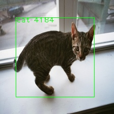
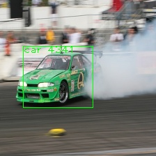
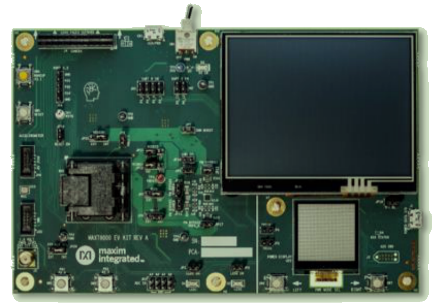

Guanchu Wang (王冠楚)
 |
PhD. Student |
About me
I am currently a PhD. student in Rice University supervised by Professor Prof. Xia Hu. Before joining Rice University, I was working as a research assistance in Texas A&M University (Prof. Xia Hu group) in 2020 and Westlake university (Professor Donglin Wang group) in 2019. From 2012 to 2019, I recevied B.S. degree from Dalian University of Technology (DUT) and M.S. degree from University of Science and Technology of China (USTC), where I was fortunate for having been supervised by Prof. Chen Gong.
My research focus on the broad area of trustworthy machine learning including the efficiency, interpretability and fairness of deep learning. Moreover, my previous research experience also involves anomaly detection, deep reinforcement learning and signal processing.
What's New
- Opensource package 'TODS' for end-to-end time-series outlier detection has been online! [Github]
- Our work 'Independent Skill Transfer for Deep Reinforcement Learning' is accepted by IJCAI 2020 (Accepted rate 12.6%)!
Education Experiences
- From 2021.9 to now: PhD. student, Computer Science, Rice University.
- From 2016.9 to 2019.6: M.S., Information Science and Technology, University of Science and Technology of China (USTC).
- From 2012.9 to 2016.6: B.S., Information and Communication Engineering, Dalian University of Technology (DUT).
Working Experiences
- From 2021.9 to now: Graduate research assistance, Rice University, USA.
- From 2020.9 to 2021.8: Graduate research assistance, Texas A&M University, USA.
- From 2019.9 to 2020.1: Research assistance, Westlake University, Hangzhou, P.R.C.
- From 2019.7 to 2019.9: Software engineer, Magcharging Inc., Shenzhen, P.R.C.
- From 2016.9 to 2019.6: Postgraduate research assistance, University of Science and Technology of China, Hefei, P.R.C.
Publications
|   |
Edge Device-based Real-time Object Detection.
|
||||||||||||||||||||||||||||
 |
Fairness via Representation Neutralization. |
||||||||||||||||||||||||||||
 |
Revisiting Time Series Outlier Detection: Definitions and Benchmarks. |
||||||||||||||||||||||||||||
 |
Unsupervised Discovery of Transitional Skills for Deep Reinforcement Learning. |
||||||||||||||||||||||||||||
 |
TODS: An Automated Time Series Outlier Detection System. |
||||||||||||||||||||||||||||
 |
Independent Skill Transfer for Deep Reinforcement Learning. |


Projects
- Interpretable Recommder System, 2021.10-now.
- AI Fairness, 2021.2-now.
- MAXIM AI: Object detection on edge devices, 2021.2-2021.10.
- TODS: Time-series outlier detection, 2020.5-2021.2.
- Deep reinforencement learning for robotic controling, 2019.10-2020.1.
- Radio frequency wireless charging prototype-machine, Shenzhen Peacock Plan, 2019.8.
- Theory of optical wireless communication and network, National Key Basic Research Program of China, 2016.9-2018.4.
Academic Services
- Selected invited Review: NeurIPS, SDM, CIKM, SIGIR, INFORM, IEEE Trans/Journal.
- Participant: ShanghaiTech Workshop on Information, Learning and Decision, 2018.
- Visiting student, Institute of electronics, Chinese Academy of science, Beijing China, 2015.
Views